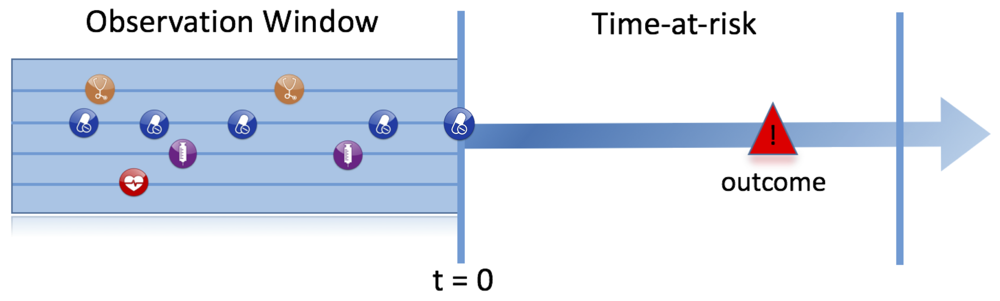
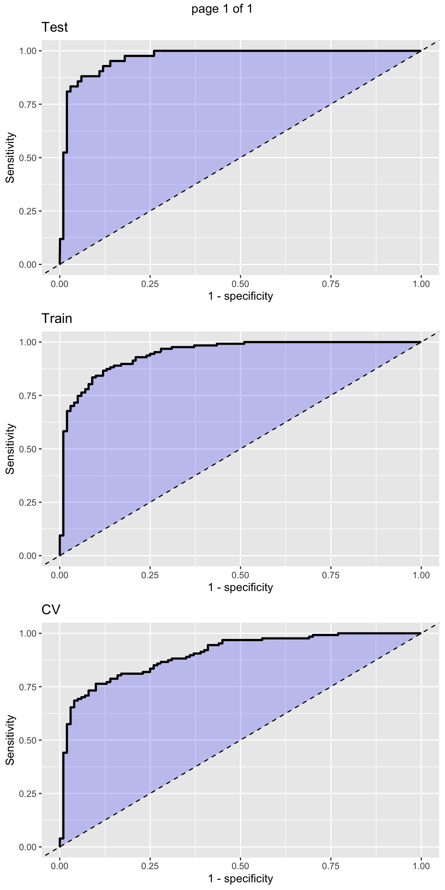
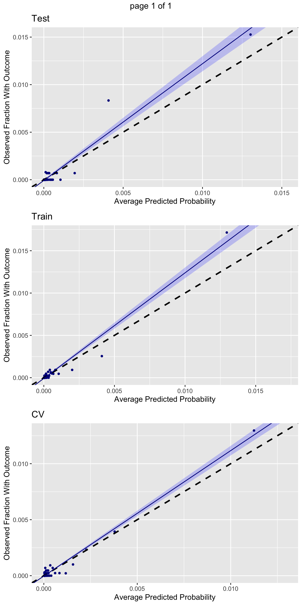
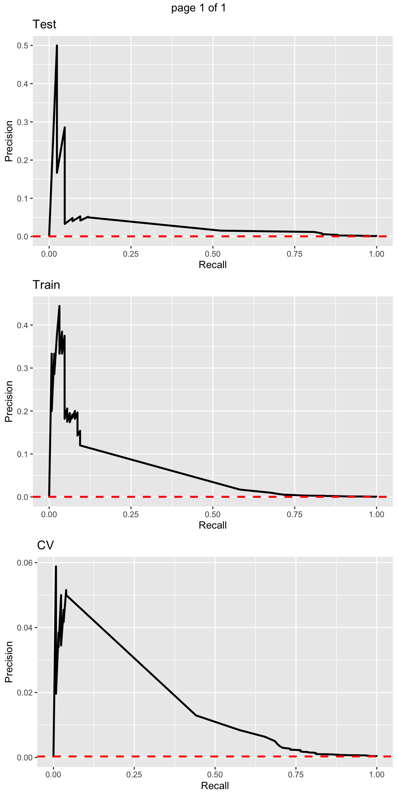
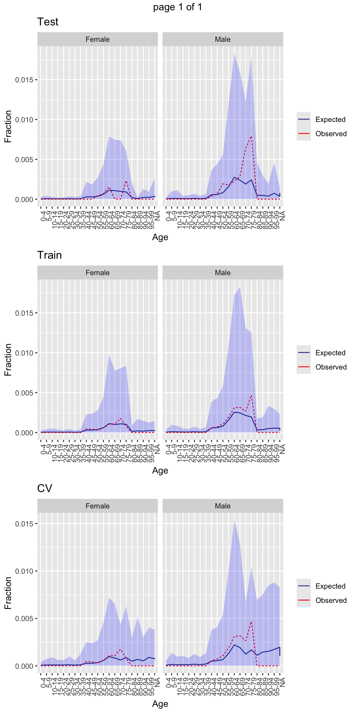
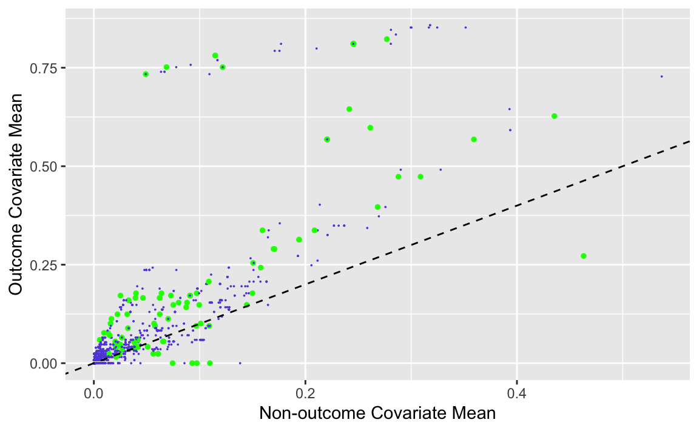
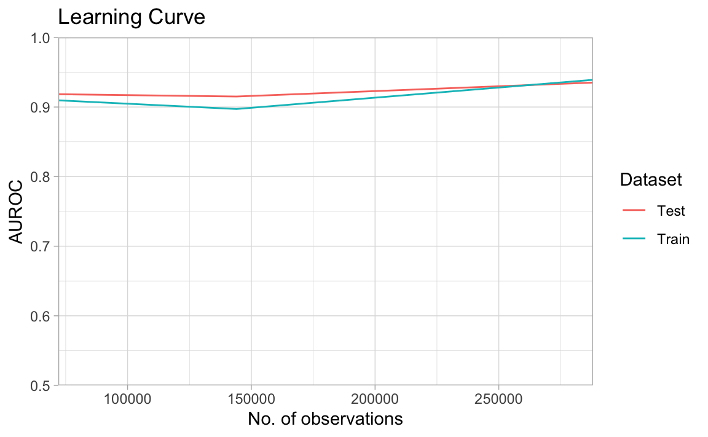

library(Capr)
# Hypertension
essentialHypertension <- cs(
descendants(320128),
name = "Essential hypertension"
)
sbp <- cs(3004249, name = "SBP")
dbp <- cs(3012888, name = "DBP")
hypertensionCohort <- cohort(
entry = entry(
conditionOccurrence(essentialHypertension),
measurement(sbp, valueAsNumber(gte(130)), unit(8876)),
measurement(dbp, valueAsNumber(gte(80)), unit(8876))
),
exit = exit(
endStrategy = observationExit()
)
)
# Acute myocardial infarction
myocardialInfarction <- cs(
descendants(4329847),
exclude(descendants(314666)),
name = "Myocardial infarction"
)
inpatientOrEr <- cs(
descendants(9201),
descendants(262),
name = "Inpatient or ER"
)
amiCohort <- cohort(
entry = entry(
conditionOccurrence(myocardialInfarction),
additionalCriteria = withAll(
atLeast(1,
visit(inpatientOrEr),
aperture = duringInterval(eventStarts(-Inf, 0), eventEnds(0, Inf)))
),
primaryCriteriaLimit = "All",
qualifiedLimit = "All"
),
attrition = attrition(
"No prior AMI" = withAll(
exactly(0,
conditionOccurrence(myocardialInfarction),
duringInterval(eventStarts(-365, -1)))
)
),
exit = exit(
endStrategy = fixedExit(index = "startDate", offsetDays = 1)
)
)
cohortDefinitionSet <- makeCohortSet(hypertensionCohort, amiCohort)Patient-level prediction: demonstration
Biostat 218
1 Introduction
In these lectures we will learn about:
Implementing standardized patient-level prediction
Execution within an OMOP CDM data source
Exploring model performance and validation statistics
2 Motivating study
What is the risk of an acute myocardial infraction (AMI) within 1 year of a first hypertension (HTN) diagnosis?

- Target (T): HTN patients
- Outcome (O): AMI
- Time-at-risk (TAR): 1 year from T cohort start-date
- Model specification: regularlized, logistic regression and much more!
3 Target (T) and outcome (O) definitions
4 Instantiate cohorts
connectionDetails <- DatabaseConnector::createConnectionDetails(
dbms = "duckdb",
server = file.path(getwd(), "data", "synthetic.duckdb"))
cohortTableNames <- CohortGenerator::getCohortTableNames(
cohortTable = "my_cohorts")
CohortGenerator::createCohortTables(
connectionDetails = connectionDetails,
cohortDatabaseSchema = "main",
cohortTableNames = cohortTableNames)
cohortsGenerated <- CohortGenerator::generateCohortSet(
connectionDetails = connectionDetails,
cdmDatabaseSchema = "main",
cohortDatabaseSchema = "main",
cohortTableNames = cohortTableNames,
cohortDefinitionSet = cohortDefinitionSet)CohortGenerator::getCohortCounts(
connectionDetails = connectionDetails,
cohortDatabaseSchema = "main",
cohortTable = cohortTableNames$cohortTable
) cohortId cohortEntries cohortSubjects
1 2 10091 10091
2 1 605861 6058615 Covariate construction via FeatureExtraction
library(FeatureExtraction)
covariateSettings <- createCovariateSettings(
useDemographicsGender = TRUE,
useDemographicsAgeGroup = TRUE,
useConditionGroupEraLongTerm = TRUE,
useConditionGroupEraAnyTimePrior = TRUE,
useDrugGroupEraLongTerm = TRUE,
useDrugGroupEraAnyTimePrior = TRUE,
useVisitConceptCountLongTerm = TRUE,
longTermStartDays = -365,
endDays = -1
)
Standardized covariates
Reusable (and reproducible) across different
- ML models
- data sources
6 Data extraction
library(PatientLevelPrediction)
databaseDetails <- createDatabaseDetails(
connectionDetails = connectionDetails,
cdmDatabaseName = "synthetic",
cdmDatabaseId = "synthetic",
cdmDatabaseSchema = "main",
cohortDatabaseSchema = "main",
cohortTable = cohortTableNames$cohortTable,
targetId = 1,
outcomeIds = c(2)) # Automatically setup for multiple outcomes7 Sampling and additional restrictions
Subsample the cohorts and add restrictions based on:
- Study dates
- First-exposure
- Washout
restrictPlpDataSettings <- createRestrictPlpDataSettings(
# sampleSize = 10000, # Subsample sized; unused here
firstExposureOnly = TRUE,
washoutPeriod = 365)8 Pull the data
plpData <- getPlpData(
databaseDetails = databaseDetails,
covariateSettings = covariateSettings,
restrictPlpDataSettings = restrictPlpDataSettings)
savePlpData(plpData, file.path(getwd(), "data", "plpData")) # Folder nameplpData <- loadPlpData(file.path(getwd(), "data", "plpData"))
Best practices
Try to always save locally intermediate objects
- NB: these contain PHI and should not be shared
9 Defining time-at-risk (TAR)
populationSettings <- createStudyPopulationSettings(
riskWindowStart = 1,
startAnchor = "cohort start",
riskWindowEnd = 365,
endAnchor = "cohort start",
removeSubjectsWithPriorOutcome = TRUE)- Many options like:
includeAllOutcomesandfirstExposureOnly. So do not forget the help functions
?createStudyPopulationSettings10 Splitting into test/train datasets
First step in supervised learning (features paired labelled outcomes) is internal validation
- Train set: learn the model with hyperparameters
- Bootstrap - smaller data size
- Cross-validation - larger data size
- BMJ Open paper
splitSettings <- createDefaultSplitSetting(
trainFraction = 0.75,
testFraction = 0.25,
type = "stratified", # or `time` or `subject`
nfold = 2,
splitSeed = 123)- Stratified, such that outcome rate is similar across partitions
Very small data
Consider having no test-set
Vignette
11 Preprocessing the training data
featureEngineeringSettings <- createFeatureEngineeringSettings() # Special covariates
sampleSettings <- createSampleSettings() # Under-/over-sample outcomes
preprocessSettings <- createPreprocessSettings(
minFraction = 0.01,
normalize = TRUE,
removeRedundancy = TRUE)- Class imbalance \(\rightarrow\) under- or over-sampling the training set
- Create latent variables to reduce dimensionality \(\rightarrow\) feature-engineering
12 Specifying outcome model
Reminder: PLP natively supports
- Regularlized logistic regression
- Gradient boosting machines
- Random forests
- Naive Bayes classifier
- AdaBoost
- Decision trees
- Multilayer perception
- Deep learning
Extensions
It is (relatively) straight-forward to add new models to PLP for automatic, across-data-source deployment
- Example: Large-scale Bayesian logistic regression with specialized priors to ease transfer learning
Vignette
lrModel <- setLassoLogisticRegression( # Unfortunately named
seed = 123,
threads = 4)13 Execution
lrResults <- runPlp(
plpData = plpData,
outcomeId = 2,
analysisId = "lrDemo",
analysisName = "Demonstration of runPlp for training single PLP models",
populationSettings = populationSettings,
splitSettings = splitSettings,
sampleSettings = sampleSettings,
featureEngineeringSettings = featureEngineeringSettings,
preprocessSettings = preprocessSettings,
modelSettings = lrModel,
logSettings = createLogSettings(),
executeSettings = createExecuteSettings(
runSplitData = TRUE,
runSampleData = TRUE,
runFeatureEngineering = TRUE,
runPreprocessData = TRUE,
runModelDevelopment = TRUE,
runCovariateSummary = TRUE
),
saveDirectory = file.path(getwd(), "data", "lrModel")
)
savePlpResult(lrResults, file.path(getwd(), "data", "model"))lrResults <- loadPlpResult(file.path(getwd(), "data", "model"))14 Interactive viewer
PLP provides a ready-to-deploy shinyApp viewer
- Now integrated directly into
Strategus
viewPlp(lrResults)15 Generate plots
PLP generates a large number of performance and validation plots
plotPlp(lrResults, file.path(getwd(), "data", "plot"))- Places all plots as
*.pdfinfile.path(getwd(), "data", "plot")
16 ROC
plotSparseRoc(lrResults)
17 Calibration
plotSparseCalibration(lrResults)
18 Precision-recall
Precision = TP / (TP + FP)
Recall = TP / (TP + FN)
plotPrecisionRecall(lrResults)
F1 score
Harmonic mean of precision and recall
19 Demographic summary
plotDemographicSummary(lrResults)
20 Covariate scatter plot
plotVariableScatterplot(lrResults$covariateSummary)Warning: Removed 13 rows containing missing values or values outside the scale range
(`geom_point()`).
shinyApp
Can interact with plot by hoovering over a covariate to show more details
21 Learning curves
learningCurve <- createLearningCurve(
plpData = plpData,
outcomeId = 2,
modelSettings = lrModel,
trainFractions = c(0.03125, 0.0625, 0.125, 0.25, 0.5),
saveDirectory = file.path(getwd(), "data", "curve"))
saveRDS(learningCurve, "learningCurve")learningCurve <- readRDS("learningCurve")
plotLearningCurve(learningCurve, abscissa = "observations")
22 Fitting multple models
modelDesign <- list(
createModelDesign( # first fit a L_1-regularized logistic regression
targetId = 1,
outcomeId = 2,
restrictPlpDataSettings = restrictPlpDataSettings,
populationSettings = populationSettings,
covariateSettings = covariateSettings,
featureEngineeringSettings = featureEngineeringSettings,
sampleSettings = sampleSettings,
preprocessSettings = preprocessSettings,
splitSettings = splitSettings,
modelSettings = setLassoLogisticRegression(
seed = 123,
threads = 4)
),
createModelDesign( # second fit a gradient boosting machine
targetId = 1,
outcomeId = 2,
restrictPlpDataSettings = restrictPlpDataSettings,
populationSettings = populationSettings,
covariateSettings = covariateSettings,
featureEngineeringSettings = featureEngineeringSettings,
sampleSettings = sampleSettings,
preprocessSettings = preprocessSettings,
splitSettings = splitSettings,
modelSettings = setGradientBoostingMachine(
ntrees = 300,
nthread = 4,
maxDepth = c(3,7,10))
)
)
model <- runMultiplePlp(
databaseDetails = databaseDetails,
cohortDefinitions = cohortDefinitionSet,
modelDesignList = modelDesign,
saveDirectory = file.path(getwd(), "multipleModels"))23 Interactive viewer and more
viewMultiplePlp(file.path(getwd(), "multipleModels"))Deep learning models are also available
There is a great vignette
Packaged as DeepPatientLevelPrediction
Final example